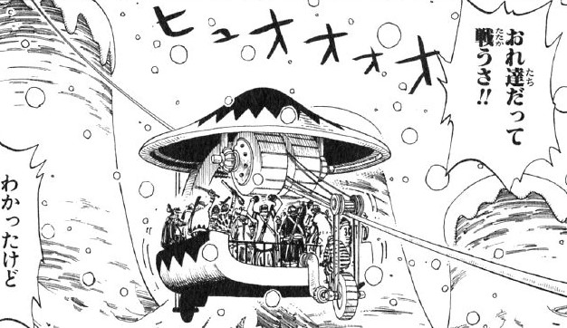

Must-sees at Drum Island!
Drum Rockies
View the world-famous mountains!
The main landmark of the island. A chain of drum-shaped mountains that tower over the entire kingdom. The tallest one is called Drum Rock.
Drum Castle

View the Royal Castle!
The kingdom's royal castle, located at the top of Drum Rock. It was later converted into a medical center and academy.
Drum Ropeway
View the tram-way!
A tram-way system that connects the Drum Castle to the rest of the kingdom.